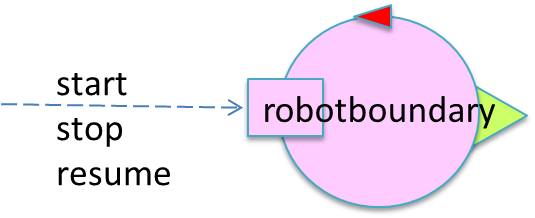
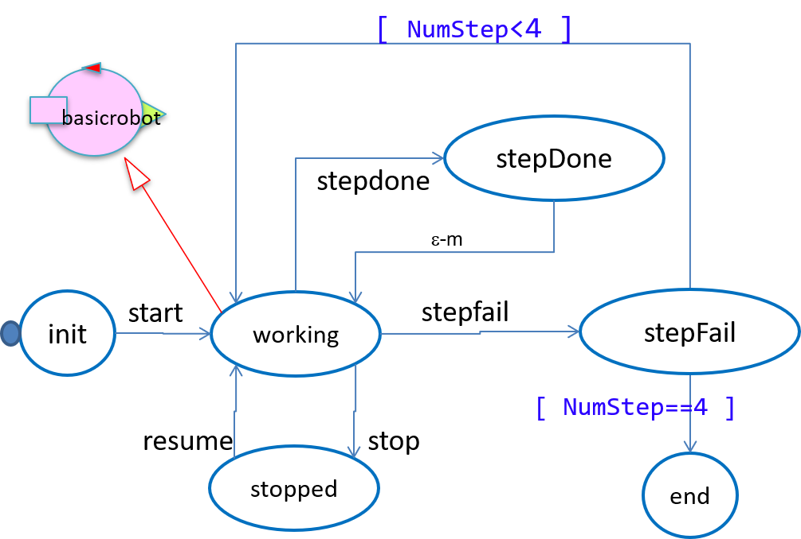
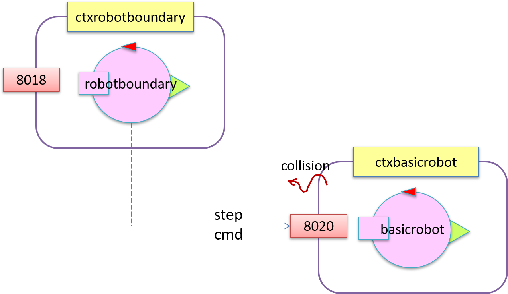

- Introduction
- Requirement analysis
- Problem analysis
- The logical architecture
Introduction
This work is related to the project
it.unibo.qak20.robotboundary introduced in
RobotQakBoundary.html
(project
it.unibo.qak20.boudaryrobot.analysis).

Requirements
The user-defined requirements of our
problem are those introduced in
RobotActorBoundary | requirements.
Let us introduce a more precise set of requirements:
- reqStart: the 'robotboundary' must execute commands of the form start(ARG), ARG=... sent to it by means of a
dispatch with msgId=start;
- reqStop: the 'robotboundary' must execute commands of the form stop(ARG), ARG=... sent to it by means of a
dispatch with msgId=stop;
- reqResume: the 'robotboundary' must execute commands of the form resume(ARG), ARG=... sent to it by means of a
dispatch with msgId=resume;;
- reqEnd: the 'robotboundary' must terminate its work when it receives a dispatch with msgId=end
Let us immediately introduce a formalized specification of theses messages:
Dispatch start : start(ARG)
Dispatch stop : stop(ARG)
Dispatch resume : resume(ARG)
Dispatch end : end(ARG)
Since a (non-functional) requirement is now the usage of the 'basicrobot' introduced in
Qak20Basicrobot.html,
our actor must be able to 'speech the language' of the 'basicrobot':
Request step : step( TIME )
Reply stepdone : stepdone(V)
Reply stepfail : stepfail(DURATION, CAUSE)
Requirement analysis
Let us introduce a model for the 'basicrobot' expressed as a QAkactor:

Context ctxrobotboundary ip [host="localhost" port=8018]
Context ctxBasicrobot ip [host="127.0.0.1" port=8020]
ExternalQActor basicrobot context ctxBasicrobot
QActor robotboundary context ctxrobotboundary{
State s0 initial {
...
}
}

|
The required behavior of the 'robotboundary' actor can be expressed by a QAk model
(robotboundary.qak) that corrspodes to the following state-diagram:

The 'robotboundary' actor must interact with a 'basicrobot'.
Since we consider here the 'basicrobot' as a (micro)service that already works in its own node (context),
the 'robotboundary' model declares the 'basicrobot' actor as an external actor.
Since we want - at the moment - to launch both the actors within the same computer, we use two different names
( localhost and 127.0.0.1) to denote our computer as the host of the two contexts.
|
Problem analysis
The logical architecture
|

|
In order to interact with the 'basicrobot', the 'robotboundary' actor sends a request to it,
by using the high-level operation:
request basicrobot -m step : step( STEPTIME )
The QAK-infrastructure takes care of implementing the request in the proper way according to
the message-delivery rules introduced in QAkactor20Intro :
- the Qak-Infrastructure find sthe ipaddress-port of the receiver ('basicactor') context
- the request is sent via MQTT if a MQTT broker is specified in the 'robotbouandary' model
otherwise via CoAP
- the event collision raised by the 'basicrobot' is delivered to all the other known Contexts
of the system and to all the 'alien' connected via TCP or via MQTT
|
Project
The robotboundary
robotboundary.qak in project it.unibo.qak20.robotboundary
|
The 'robotboundary'
- is able to execute user commands sent to it as a dispatch (start | stop | resume ) ;
- after receiving the coomand start, it begins its goal-work, by moving along the room boundary, until it reaches the
home-position again; in the meantime, it must be able to react to the commands stop | resume
- maintains information on its current functional state in the variable ActorResourceRep
- "initial" when it is just activated (state 'init');
- "working" when it executes the command start: start(..) or resume: resume(..);
- "stepDone" when it has done a step with success
- "stepFail" when it has attempted a step that failed
- "stopped" when it executes the command stop: stop(..)
- "stopped" when it executes the command stop: stop(..)
;
|
Test plans
Test plan-robotboundary
TestRobotboundary.kt
in project it.unibo.robotboundary
|
TestPlan is based on the values stored in ActorResourceRep
|
Run
- Activate the 'basicrobot'
- Launch the TestRobotboundary.kt
or the MainCtxrobotboundary.kt